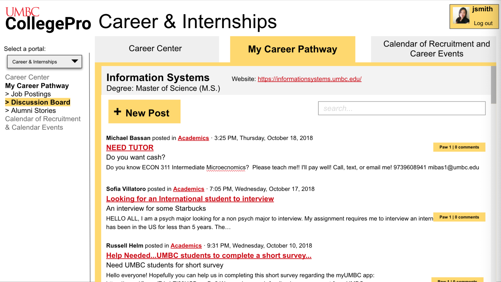

This section includes my research projects, some of which I had a hybrid designer/researcher role in. Evaluative research projects assessed existing products, whereas Generative research projects were more exploratory.
w.i.p. means "work in progress". The full report links are the versions submitted for the related courses. I had a lot of fun learning UX with these projects! So I'm turning those reports into shorter summary slide presentations when I have time.
w.i.p. means "work in progress". The full report links are the versions submitted for the related courses. I had a lot of fun learning UX with these projects! So I'm turning those reports into shorter summary slide presentations when I have time.
-
Evaluation Research Projects
Games User Research (GUR): Ghostbusters (2016)
Main Research Question: How and why was the game design of Ghostbusters (2016) received poorly by critics and players?
Attempting to answer this overall question involved doing an extensive project that required four distinct stages.
Methods:
- 1. Competitive review
- 2. Heuristic evaluation
- 3. Usability test
- 4. Playtest
Every UX research method had its own evaluation round, in which subsequent research questions/objectives were built from the previous round's findings. The presentation link has summary slides of each stage, and the full report link (submitted for the course) contains more details for design recommendations and research artifacts such as test plans, moderator guide, consent form, protocols, and surveys. I used DePaul's Software Observation and Usability Lab (SOUL) to conduct the tests.
-
GUR: Dev Student Game #1
Game's core pillar: "Abstract maze game with ghost-like mechanics"
Research Questions:
- Can players understand the main game mechanic of "tethering" (i.e. attaching oneself to another body)?
- Can players understand consequences of failure in the game?
- Can players understand the objectives despite the intentional aesthetic ambiguity of the game?
- Can players navigate the game user interface?
- Can players navigate the game map?
Method: Usability test
This game was an early build of a senior undergrad Game Development capstone project. At the time, the game dev students wanted help mainly with usability issues, as the game was intentionally made dark to support its ghost-like narrative. I again used DePaul's SOUL lab.
-
GUR: Dev Student Game #2
Game's core pillar: "Spider-Man in space"
Research Questions:
- Do players perceive the game's aesthetics the way the developers intended (i.e. a feeling of "Spider-man in space")?
- Can players understand the function and controls of the grappling mechanic?
- Can players understand the game's objectives?
- Can players navigate the game world?
Methods:
- 1. Heuristic evaluation
- 2. Hybrid usability test and playtest
This game was another early build of a senior undergrad Game Development capstone project. The game dev students were in the later stages of their process and were interested in primarily assessing the player experience (enjoyment and aesthetics) of their game, but also identifying usability issues that they may have missed. I again used DePaul's SOUL lab to do this study. -
RaceTrack
Methods:
- 1. Usability test
- 2. Interviews
- 3. Observation
- 4. Prototyping
My MS HCI Prototyping and Implementation course group project was RaceTrack, a mobile phone and smartwatch application that helps runners stay motivated. It gave detailed feedback on runner performance and connecting them to their family, friends, and/or coaches for support during racetime. A user could create an account as a Runner, Supporter, or Coach, but would have the option to switch between modes.
Each member of my group conducted an in-person think-aloud usability test with a participant on a medium-fidelity (mid-fi) prototype of RaceTrack. The sessions were recorded and data collection focused on interactions, navigational choices, and task completion success.
I was part of a 4-person group, but I was primarily focused on implementing the Supporter role interfaces (mid-fi version displayed above) and UX research. -
PlayerSync
Methods:
- 1. Think-aloud observation
- 2. Interview
- 3. Prototyping (mid & hi-fi)
PlayerSync was a solo term project for my MS HCI Social Interaction Design course. I created a prototype in Adobe XD for a mobile app that matches the user to other gamers/players based on personal gaming preferences and behaviors. It aims to centralize communication across all existing gaming platforms. I conducted a remote think-aloud observation with an interview afterwards with one participant using a mid-fi version to iterate on towards the final hi-fi. -
CollegePro
Methods:
- 1. Survey
- 2. Prototyping
CollegePro was an Interaction Design group project for a website called CollegePro, that aimed to centralize information resources regarding academic advising, career, and research in a personalized way and allows students to communicate with others. We conducted surveys for students to provide insight in wireframing, prototyping, and designing a website, CollegePro, that aims to centralize information resources regarding academic advising, career, and research in a personalized way and allows students to communicate with others. -
Xbox Live Messaging
Main Research Question: How usable is the Xbox Live messaging system?
Methods:
- 1. Heuristic evaluation
- 2. Cognitive walkthrough
- 3. Usability test
- 4. Observation
This was my first attempt at an overall usability evaluation for an existing system prior to transferring into an HCI-focused master's program. I examined the Xbox Live (messaging system) and developed design recommendations. While posted here mostly for nostalgia, findings are insightful so I'm working on the slides. -
Generative Research Projects
Games for Mental Health (DBT) -- currently designing study
Research Questions:
- What needs do patients in DBT-focused mental health recovery programs have?
- How could interactive technologies assist in (or hinder) practicing DBT skills?
- Could technology increase learning outcomes of DBT skills?
- Could technology foster social connection during therapy?
Methods:
- 1. Interviews
The ongoing COVID-19 has brought discussions about mental health to the forefront, though it has always been a pressing issue in our society. Depression and anxiety are ravaging our population along with coronavirus itself. Fortunately, people can develop coping skills from cognitive behavioral therapy (CBT) and dialectical behavioral therapy (DBT). These skills are used to overcome thoughts, feelings, and behaviors that impede health. I'm designing a research study to discover ways that interactive technologies can help people practice the Interpersonal Effectiveness aspect of DBT skills in an engaging and enjoyable way through eliciting perceived cognitive, emotional, and decision-making challenge. I am currently in the generative research phase for this project.
-
Music for Stories
Main Research Question: What do digital content creators need to efficiently discover and edit music into their content, without requiring knowledge of music theory or composition?
Methods:
- 1. Observations
- 2. Interviews
- 3. Surveys
I was part of an exploratory study about how content creators discover and add music and other auditory material to their work. The project resulted in recommendations towards designing an intelligent digital media editing software. This is the final report containing details about each stage of the process and our implications for design.
I was part of a 4-person group where the workload for obtaining data was split equally. I did a significant part of the qualitative and quanitative analysis.